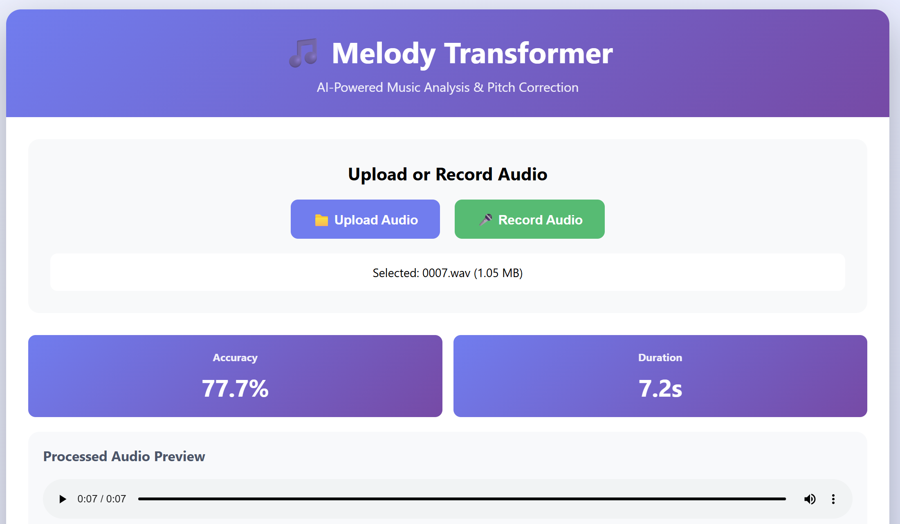
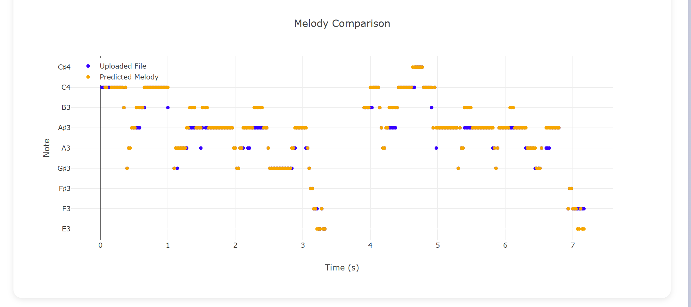
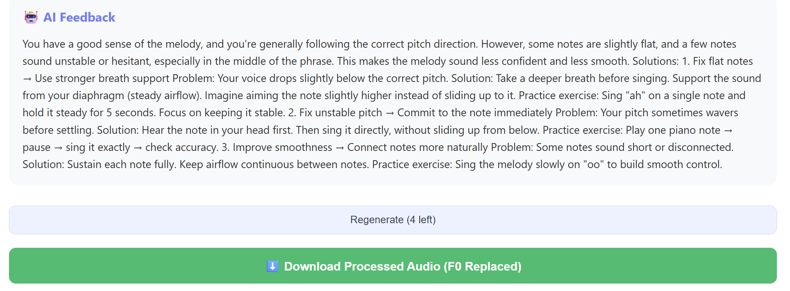
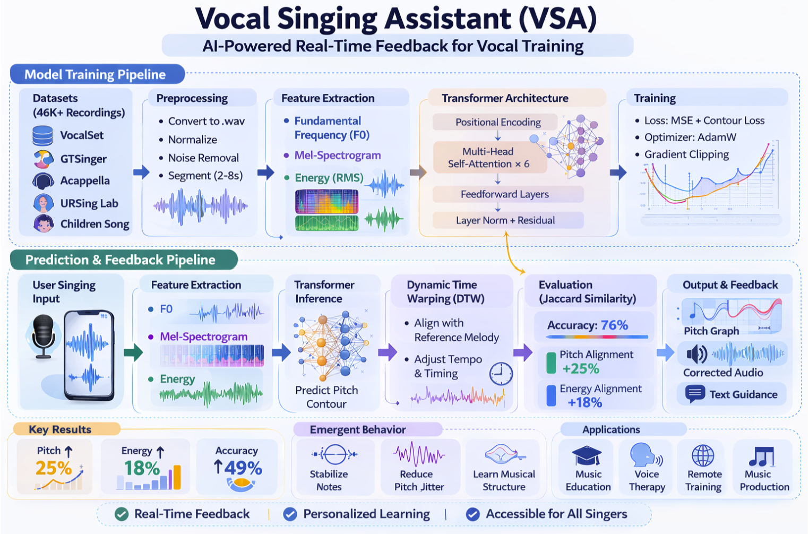
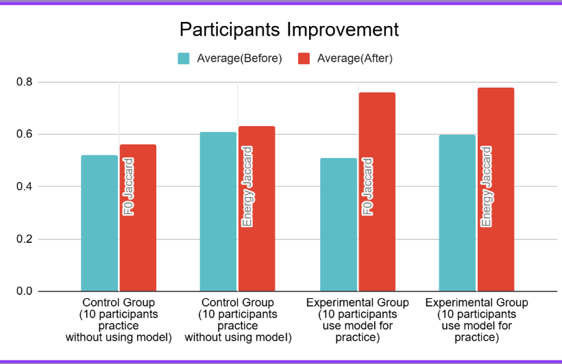

Why does this exist?
Most beginner singers give up early — not because they can't sing, but because traditional learning requires reading sheet music, knowing music theory, or affording a teacher. That's a huge barrier.
I wanted to build something that meets singers where they are: with just their voice, no prerequisites.
"What if you could learn a melody just by listening and trying — and have AI guide you in real time?"
What it looks like





Under the hood
Audio input capture
The app listens to the singer's voice in real time, capturing raw audio via microphone input and converting it to a processable waveform.
Pitch & melody extraction
Using audio processing techniques, the model extracts pitch information frame-by-frame to build a representation of what the singer is doing.
AI melody prediction
A trained ML model predicts the most likely next melodic phrase, giving the singer a suggestion to follow without needing sheet music.
Real-time feedback
The singer hears the predicted melody and can adjust — the loop continues, helping them gradually learn and stay in tune.
What I learned
Audio ML is hard
Working with raw audio data taught me how noisy real-world input is — cleaning and preprocessing took more time than the model itself.
User empathy first
I kept asking: would a nervous beginner find this helpful? That question shaped every design decision I made.
Iteration is everything
The first version barely worked. Version 3 was where it clicked. Building is a patience game.
Math shows up everywhere
Fourier transforms, probability distributions, loss functions...Those profound, "useless" math knowledge turned out to be surprisingly relevant.